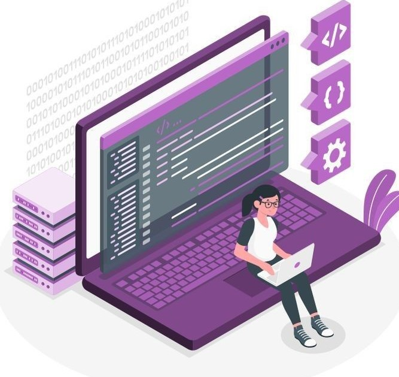

Full Stack Developer
Olá sou a Maria Eduarda, Denvolvedora FullStack, Saiba mais sobre mim
Saiba Mais!


Olá sou a Maria Eduarda, Denvolvedora FullStack, Saiba mais sobre mim
Saiba Mais!
Meu nome é Maria Eduarda, tenho atuado na área de TI desde 2021 e sou aluna do curso de Análise e Desenvolvimento de Sistemas na PUC Minas. Minhas principais habilidades de desenvolvimento incluem JavaScript, além de experiência com métodologias ágeis, experiência do usuário (UX) e Banco de dados.
Experiência
Atualmente, estou em busca de uma oportunidade para atuar na área.
Domínio em C# (C Sharp) para Back-End, e JavaScript e TypeScript. Habilidade em .Net Framework e Bootstrap para o desenvolvimento web.

Experiência com biblioteca React para criaçãode interfaces dinâmicas e responsivas.
Conhecimento em MySQL para modelagem, manipulação e consulta de dados em aplicações.

Habilidade em Git e GitHub para controle de versão.
Uma landing page é uma página da web projetada especificamente para converter visitantes em leads ou clientes. Eles normalmente têm um foco específico, como promover um produto, serviço ou evento, ou obter informações de contato.
RepositorioA Pokédex é uma enciclopédia virtual portátil de alta tecnologia que os treinadores Pokémon transportam para registra todas as espécies diferentes de Pokémon que são encontradas durante a sua viagem como treinadores.
Visitar site RepositorioJobs é um site de busca de emprego é uma plataforma online que conecta candidatos com recrutadores. o site foi desenvolvido usando HTML e CSS.
Visitar site RepositorioOne Piece é uma série que conta as aventuras de Monkey D. Luffy, um jovem cujo corpo ganhou as propriedades de borracha após ter comido um fruto do diabo acidentalmente. Com sua tripulação, os Piratas do Chapéu de Palha, Luffy explora a Grand Line em busca do tesouro mais procurado do mundo, o "One Piece", a fim de se tornar o próximo Rei dos Piratas. o site mostra os principais personagens.
Visitar site RepositorioEste projeto foi desenvolvido, para colocar em prática todo o conhecimento adquerido no primeiro périodo do curso tecnologia em Análise e Desenvolvimento de Sistemas. O stie possui: Tela de Login, Tela de Cadastro, Tela de Página inial, Tela de Área de usuário, Tela Principal.
Visitar site Repositorio